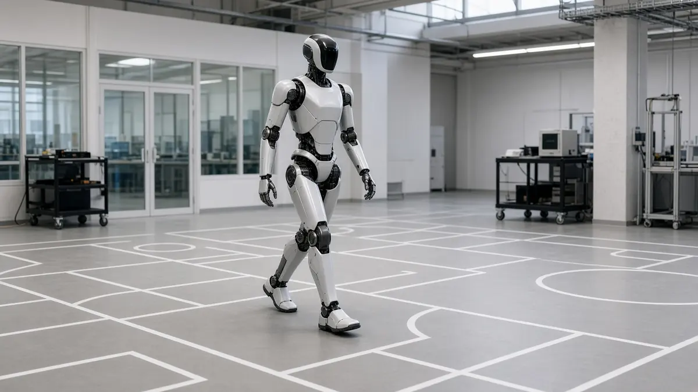
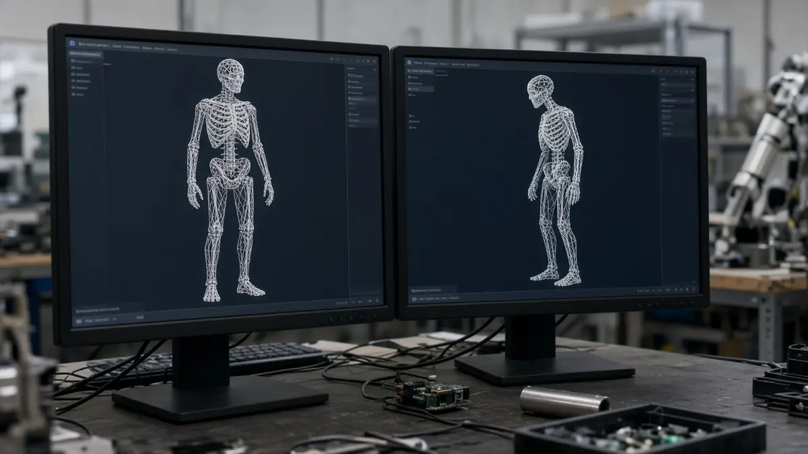

Unitree
Unitree says it is building "Rehearsal", a self-improving loop for robot software
Short answer: Unitree founder Wang Xingxing said on 22 October 2026 that the company is developing "Unitree Rehearsal", a "self-evolving" feedback loop designed to let humanoid robots write code, run simulations and improve their real-world performance with less manual programming, the South China Morning Post reported.
SCMP says Wang unveiled the project at a physical AI conference hosted by Unitree in Hangzhou and called it the company's most important initiative of the year. In the system under development, AI would search research papers, write code and test it in simulation before running trials on physical robots.

Humans could still assess performance and give feedback, according to SCMP, but Wang said the ultimate goal is an automated cycle that could greatly speed up the development of robotics algorithms.

PANews, summarising his keynote, reports that Wang said leading AI-model companies have in a sense already achieved self-evolution of models internally, and that the core challenge for embodied AI to have its "ChatGPT moment" is aligning AI model inputs and outputs with real robots. Neither report gives technical details, test results or a release date.